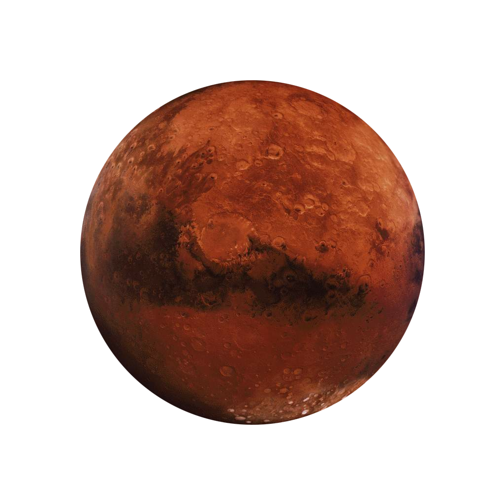

Mars

The fourth planet from the sun,
is a cold, dusty place.
The dust, an iron oxide,
gives the planet its reddish cast.
Mars shares similarities with Earth: It is rocky,
has mountains and valleys,
and storm systems ranging from localized
tornado-like dust devils to planet-engulfing
dust storms. It snows on Mars.
And Mars harbors water ice.
Scientists think it was once wet and warm,
though today it’s cold and desert-like.
Diameter: 4,217 miles (6,787 km)
Orbit: 687 Earth days
Day: Just more than one Earth day
(24 hours, 37 minutes)